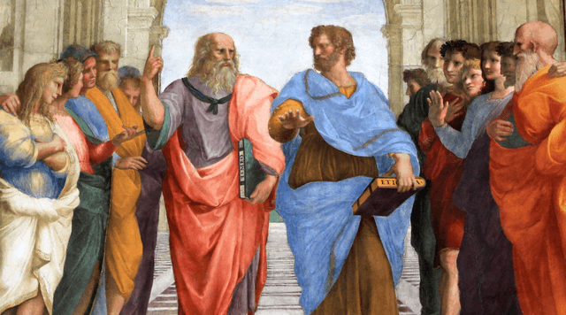

Me
Shalom Habtamu, born in Norway, Trondheim.
Come along on a cosmic adventure with me, Shalom Habtamu, 26 years old, an astronaut whose career started in the complex field of software engineering and now extends into the fascinating realm of space travel. Equipped with an undergraduate degree in software engineering, my preliminary exploration of the realm of code and algorithms served as a basis for a journey beyond the confines of computer devices.
From the beginning, I was drawn to mathematics and astronomy with such enthusiasm that I could not resist the universe. I took comfort in thinking about the size of the universe and the fascinating mathematical patterns that govern the planets during the quiet moments in between lines of code. Making the bold decision to go into space and change careers from programmer to astronaut was more than just a career move. I took on challenges and used my love of journeys as fuel to follow a path that eventually brought me to NASA. My journey encompasses everything from software debugging to space exploration, it's the very definition of following one's passions without fear.
Floating in space, my journey echoes through the stars. From coding to stargazing, let's dream together under the endless sky. The universe is vast, and so are the dreams that guide us. In the quiet of space, my story whispers, and as the cosmic tale ends, I find peace in knowing that dreams are eternal, just like the universe.
Interests
-
Stargazing
My life's fascinating aspect is my intense passion for stargazing. I love to connect with the cosmos, whether I'm in the calm of the natural world or in the hustle of a city. My decision to become an astronaut was motivated by this passion and my desire to solve the mysteries of outer space. -

Coding
My creative canvas is found in the complex move of lines of code and algorithms. I solve complex puzzles with beautiful solutions by analyzing software architecture as a coding enthusiast. I set out on a creative journey, using code as the language to reshape and define digital environments. -

Philosophy
Beyond the technical intricacies of my profession, I am also a philosopher at heart. From pondering the complexities of software architecture to contemplating the existential questions posed by the cosmos, my mind weaves together analytical thinking and philosophical wonder.
Meet My Family
Dad: Habtamu Mihrete
Age: 57
Occupation: Water Engineer
Mom: Ejigayehu Tadesse
Age: 55
Occupation: Finance Manager
Brother: Dawit Habtamu
Age: 16
10th-grade student